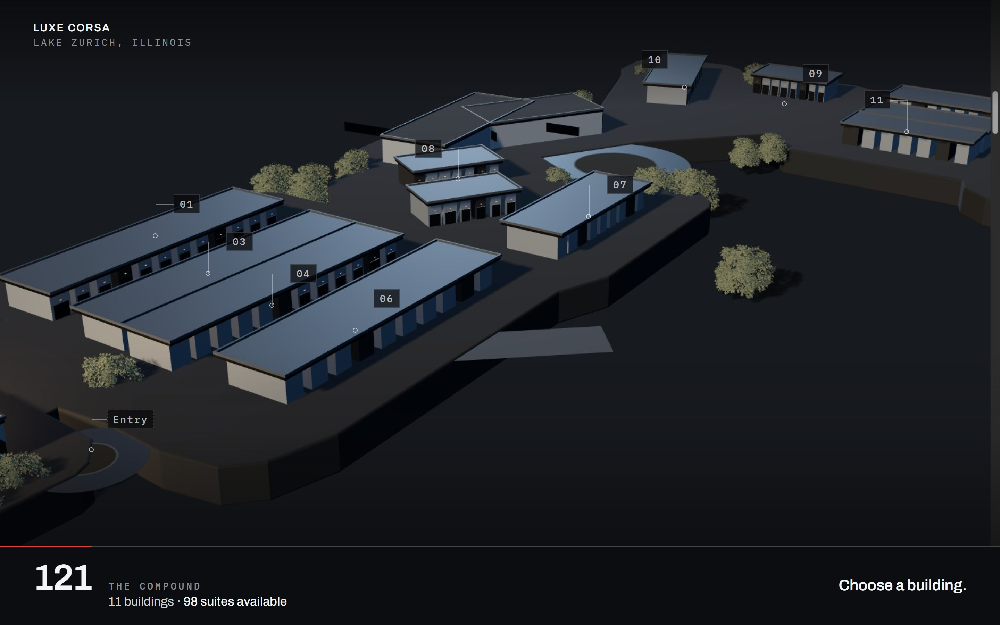
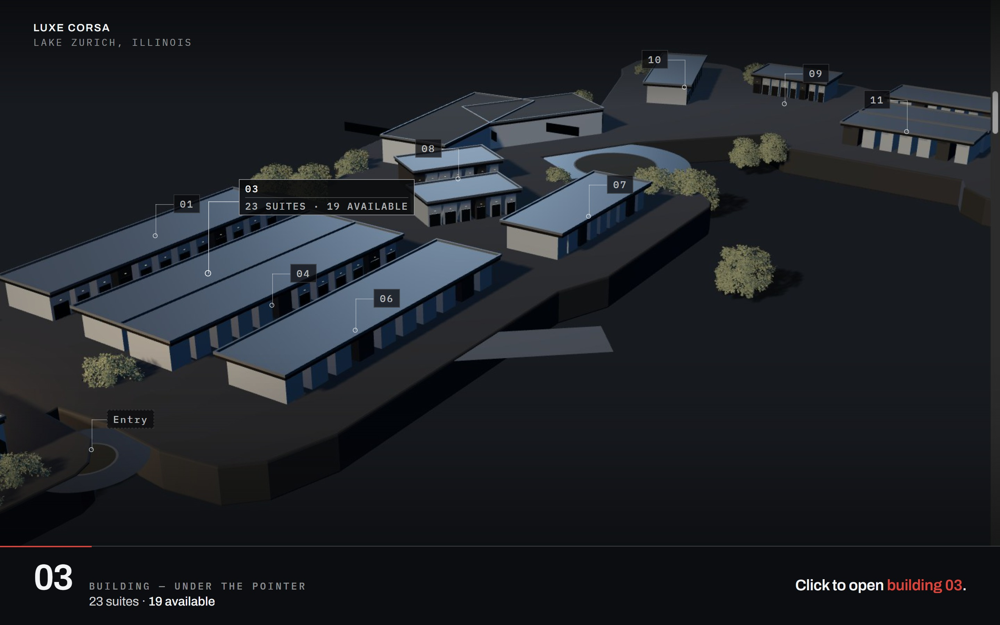
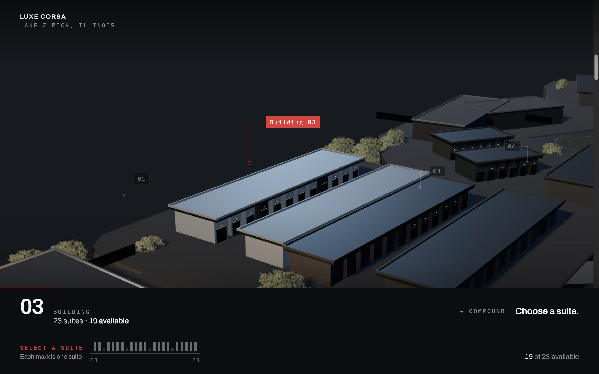
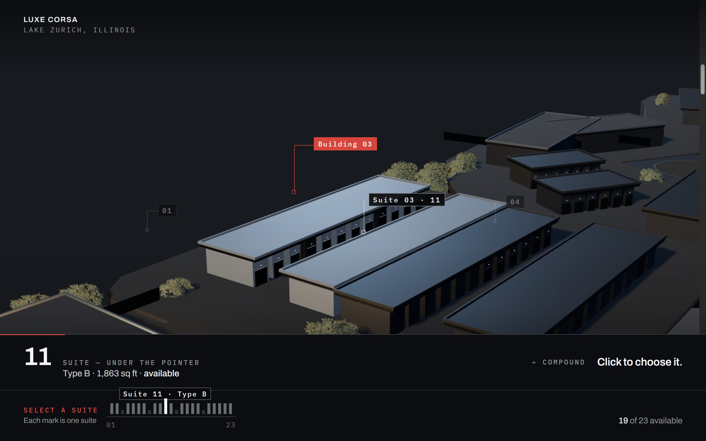
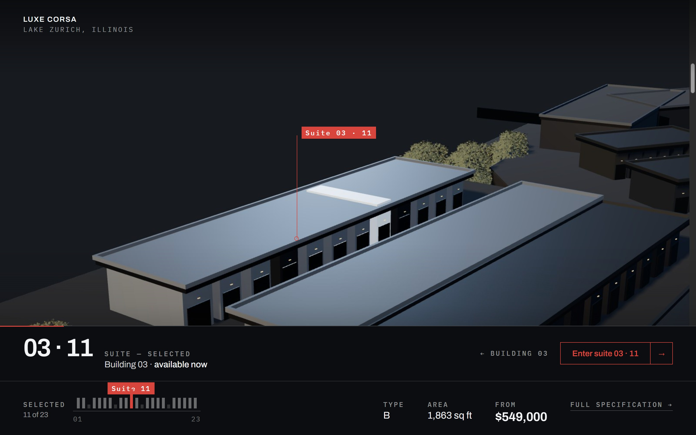
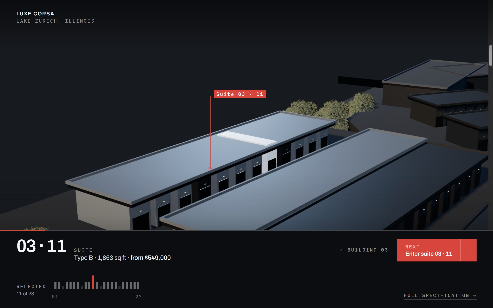

Luxe Corsa
Lake Zurich, Illinois
01
03
04
06
08
07
10
09
11
Entry
121
The compound
11 buildings · 98 suites available
Choose a building.
Every building tag is the end of a drawn leader that starts on the roof it names, and the leader extends on hover — the line is the interaction. The plate becomes a console with three zones: identity left, control centre, action right. The accent is the project's own red, spent on exactly three things: the active target, the chosen thing, and the next action. Nothing else is ever red.
Static composition board · 1440 × 900 · model plates are real captures of the production Three.js compound · hover and selection states are drawn, not scripted







